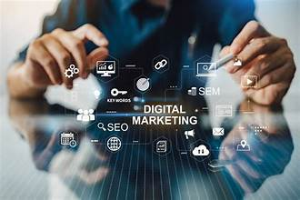
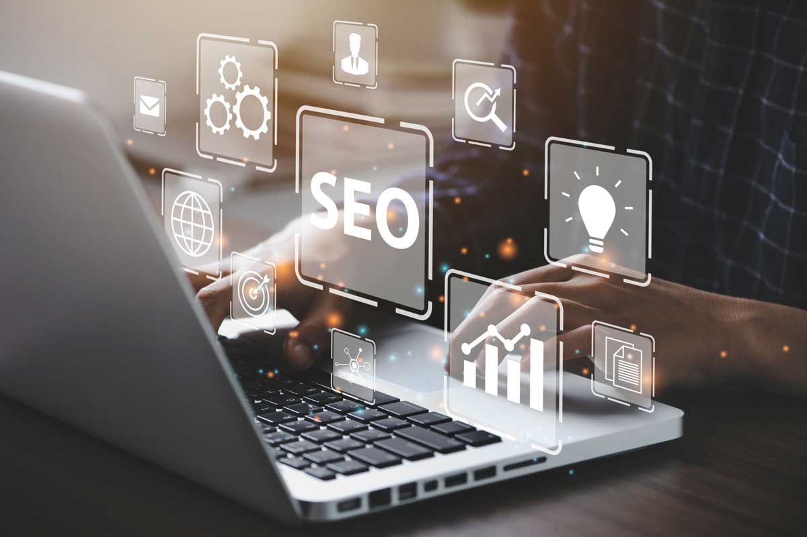
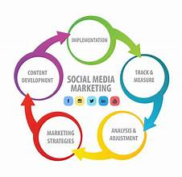

Introduction to Digital Marketing
Digital marketing covers a wide range of techniques used to promote products or services through the internet. This field includes various methods such as SEO, social media, and email marketing, all aimed at reaching a broader audience.

Search Engine Optimization (SEO)
SEO is the practice of optimizing a website to improve its visibility on search engines. It plays a crucial role in driving organic traffic, improving rankings, and increasing conversions.

Social Media Marketing
Social media marketing leverages platforms like Facebook, Instagram, and Twitter to promote products, engage with users, and build relationships with the audience. It’s a powerful tool for brand awareness.

Email Marketing
Email marketing is one of the most effective strategies for engaging with an audience, driving sales, and keeping customers informed with personalized messages and newsletters.

Web Analytics
Web analytics helps businesses measure and analyze user behavior on their websites. This data provides valuable insights for improving marketing strategies and decision-making.